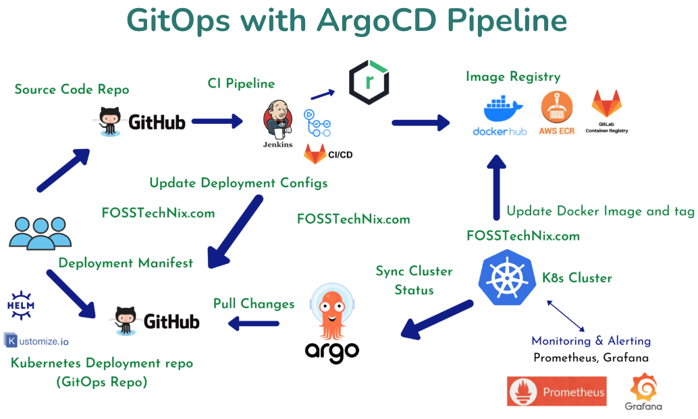

What is GitOps?
GitOps uses Git repositories as a single source of truth to deliver infrastructure as code.
Submitted code checks the CI process, while the CD process checks and applies requirements for things like security,
infrastructure as code, or any other boundaries set for the application framework.
All changes to code are tracked, making updates easy while also providing version control should a rollback be needed.
GitOps delivers:
- A standard workflow for application development
- Increased security for setting application requirements upfront
- Improved reliability with visibility and version control through Git
- Consistency across any cluster, any cloud, and any on premise environment
- By using the same Git-based workflows that developers are familiar with, GitOps expands upon existing processes from application development to deployment, application life cycle management, and infrastructure configuration:
- For developers, they can now code at their own pace without waiting on resources to be assigned or approved by operations teams.
- For ops teams, visibility to change means the ability to trace and reproduce issues quickly, improving overall security.
- For organizations, with an up-to-date audit trail they can reduce the risk of unwanted changes and correct them before they go into production.
- Using platforms of QA, Stage and Prod we can try solutions and infrastructure/ops updates in a systematic and controlled way.
Using GitOps
To use GitOps we need infrastructure that can be declaratively managed.
Because of this, GitOps is often used as an operating model for Kubernetes and cloud-native application development
and can enable continuous deployment for Kubernetes.
A Typical CI/CD Pipeline using ArgoCD
What's ArgoCD?
Argo CD is a declarative, GitOps continuous delivery tool for Kubernetes. What it brings:
- Application definitions, configurations, and environments should be declarative and version controlled.
- Application deployment and lifecycle management should be automated, auditable, and easy to understand.
- A nice user friendly Web UI onto the deployments pods and configuration components, allowing restarts, inspection etc etc.

Explanation of diagram
To understand the GitOps with ArgoCD Pipeline Workflow Diagram - there are effectively two workflows:
- The top CI half: Gitops used for Image creation - by pushing source code to a git repo (e.g. github), using CI pipeline to build docker image with new ID and push to image repo:
- The code is pushed to the code repository like GitHub, GitLab or BitBucket etc
- The code is built and tested in the CI platform using GitHub Actions, GitLab CI, Jenkins
- The code target outputs are shipped to artifactory if necessary (e.g. updated jars or wars etc)
- A Docker image is built based on the Dockerfile and pushed to the Image registry - either in Docker hub or AWS EKS repo etc
- The bottom CD half: Deployment to affected cluster(s) - the K8S deployment manifest is updated with the new ID and published to the GitOps Repo used for cluster state
- which ArgoCD will take as the source of truth and update the cluster(s) to match it:
- The CI pipeline (either Jenkins or Gitlag etc or a manual update by developer) commits and pushes a new version ID
into to the Gitops Repo e.g. within a deployment.yaml - along with any other cluster changes needed.
- The Gitops Repo is the source for cluster state and (depending on ArgoCD sync policy) will affect one or more Kubernetes clusters
- Argo CD supports multiple config management options (based on kustomize, Helm, Jsonnet, and/or plain-YAML)
- The push to the repo triggers a synchronization event in ArgoCD:
the new cluster state is checked and compared to existing state and the affected clusters are updated to match it
- Finally the Kubernetes clusters are monitored and alerting by tools like Prometheus, Grafana, Cloudwatch, etc.
How ArgoCD Works
The CD in ArgoCD follows the GitOps pattern of using Git repositories as the source of truth for defining the desired application state:
- Application Definition: Developers define the desired state of applications in Git repositories, using manifests or declarative files. These manifests specify the desired configuration for the application’s components, such as pods, services, and deployments.
- Git Repository Changes: When changes are made to the application manifests in the Git repository, a webhook triggers Argo CD to initiate the synchronization process.
- Cluster Reconciliation : Argo CD compares the desired state from the Git repository with the actual state of the Kubernetes cluster. It identifies any discrepancies and generates a list of required changes.
- Kubernetes Controller : Argo CD, acting as a Kubernetes controller, applies the necessary changes to the cluster resources to bring them in line with the desired state. This includes creating, updating, and deleting Kubernetes objects according to the manifests.
- Continuous Monitoring : Argo CD continuously monitors the cluster and compares the updated state with the desired state. If there are any further discrepancies, it automatically applies the necessary changes to maintain synchronization.
- Status Reporting: Argo CD provides a visual dashboard and status reports that indicate the current state of applications, along with any discrepancies or pending synchronization actions.
In summary, Argo CD simplifies and automates the CD part - deployment and management of applications in Kubernetes environments.
It promotes consistency, reduces manual intervention, and enables developers to focus on building applications rather than
managing infrastructure details.
Appendix: What is Kubernetes?
Kubernetes (also known as k8s or " kube ”) is an
open source
container orchestration platform
that automates many of the manual processes involved in deploying, managing, and
scaling containerized applications. See detail in appendix: Kubernetes Steps
and https://www.redhat.com/en/topics/containers/what-is-kubernetes.
You can cluster together groups of hosts running Linux® containers,
and Kubernetes helps you easily and efficiently manage those clusters. See also ArgoCD below.
Kubernetes clusters can span hosts across on-premise,
public,
private , or
hybrid clouds.
For this reason, Kubernetes is an ideal platform for hosting
cloud-native applications
that require rapid scaling (like real-time data streaming through
Apache Kafka .
Note though we have seen some abrasion between Kafka and AWS cloud services –
we need to investigate. It was probably dopey implementation but beware. See more later.
The Kubernetes manifests are the basis for maintaining cluster state and can be specified in several ways:
- kustomize applications
- helm charts
- jsonnet files
- Plain directory of YAML/json manifests
- Any custom config management tool configured as a config management plugin
- Argo CD automates the deployment of the desired application states in the specified target environments.
- Application deployments can track updates to branches, tags, or pinned to a specific version of manifests at a Git commit.
- See tracking strategies for additional details about the different tracking strategies available.
Kubernetes dependencies
Kubernetes relies on other projects to fully provide these orchestrated services.
With the addition of other open source projects, you can fully realize the power of Kubernetes.
These necessary pieces include (among others):
- Registry, through projects like Docker Registry.
- Networking, through projects like OpenvSwitch and intelligent edge routing.
- Telemetry, through projects such as Kibana, Hawkular, and Elastic.
- Security, through projects like LDAP, SELinux, RBAC, and OAUTH with multitenancy layers.
- Automation, with the addition of Ansible playbooks for installation and cluster life cycle management.
- Services, through a rich catalog of popular app patterns.
Appendix: Argo setup and comparisons
ArgoCD Quick Start
- kubectl create namespace argocd
- kubectl apply -n argocd -f https://raw.githubusercontent.com/argoproj/argo-cd/stable/manifests/install.yaml
- See also the getting started guide.
- And the user oriented documentation and upgrade guide.
- On Mac: brew install argocd
ArgoCD vs Jenkins vs Terraform
- Jenkins is a more traditional automation server that is suitable for a wide range of applications.
- ArgoCD is designed specifically for Kubernetes environments.
- Terraform is very useful for automating infrastructure - especially for repetitive variants and contorl over CLOUD based infrastructure such as AWS SNS and SQS
- On the other hand, ArgoCD helps us implement GitOps and continuous delivery for our applications.
- We can successfully combine ArgoCD and Terraform: Argo taking care of K8S deployments and Terraform for (AWS) infrastructure updates.
Helm charts.
Install with:
brew install helm.
For Helm, there are three important concepts:
- The chart is a bundle of information necessary to create an instance of a Kubernetes application.
- The config contains configuration information that can be merged into a packaged chart to create a releasable object.
- A release is a running instance of a chart, combined with a specific config.
Helm Implementation
- The Helm client and library is written in the Go programming language.
- The library uses the Kubernetes client library to communicate with Kubernetes.
- Currently, that library uses REST+JSON. It stores information in Secrets located inside of Kubernetes.
- It does not need its own database.
- Configuration files are, when possible, written in YAML.
- See https://helm.sh/docs for further info.
Kubernetes goals.
The primary advantage of using Kubernetes in your environment, especially if you are optimizing app dev for the cloud, is that it gives you the platform to schedule and run containers on clusters of physical or virtual machines (VMs).
More broadly, it helps you fully implement and rely on a container-based infrastructure in production environments. And because Kubernetes is all about automation of operational tasks, you can do many of the same things other application platforms or management systems let you do—but for your containers.
Developers can also create cloud-native apps with Kubernetes as a runtime platform by using Kubernetes patterns. Patterns are the tools a Kubernetes developer needs to build container-based applications and services.
- Orchestrate containers across multiple hosts.
- Make better use of hardware to maximize resources needed to run your enterprise apps.
- Control and automate application deployments and updates.
- Mount and add storage to run stateful apps.
- Scale containerized applications and their resources on the fly.
- Declaratively manage services, which guarantees the deployed applications are always running the way you intended them to run.
- Health-check and self-heal your apps with autoplacement, autorestart, autoreplication, and autoscaling.
Appendix: IaaS, PaaS and SaaS.
IaaS – Infrastructure as a Service - model used by network architects - providing virtualized computing resources over the internet. It gives access to the resources like virtual machines and virtual storage – tech knowledge required.
PaaS – Platform as a Service – model used by developers, a cloud computing model that delivers tools for the development of applications – such as AWS Services platform for RDS, SQS etc. It allows access to a run time environment for deployment and use of development tools – tech knowledge is required.
SaaS – Software as a Service – model used by end user clients, a cloud computing model that hosts software (as developed by the vendor) to make it available to clients (the users). No technical knowledge is required by consumer – all provided by the SaaS company.
Appendix : The HF Pipeline example use case
This was a work in progress, not fully automated. This was partly because things were still being developed at the cluster level
and partly for the production and stage platforms to ensure an authorized deveops person was involved in live updates.
Pipeline were affected by the switch from Jenkins to AWS CodeBuild to GitLab.
We used the following process for managing CI/CD at HF.
- Stage 1: Get a basic service built:
- Using (say) Java + Spring Boot and embedded Tomcat
- Use Maven build
- Use Artifactory repositories for dependencies and code libs
- All original source code stored in a specific GIT repo.
- Auto or manual updates to Artifactory repo may be required.
- Output of stage 1 will be repo of all the service’s source code above in GIT and jar or war updated to Artifactory.
- Stage 2: Containerize the app/service as a docker image and push to AWS:
- Use Dockerfile to define how the docker image is built.
- Use of makefile and make for other needs e.g. local launch/test
- Added to the same GIT repo as above.
- Gitlab (previously jenkins) had step to push docker image to AWS
- Output of stage 2 will be docker versioned image held in specific AWS repo for the platform (qa, prod etc).
- Stage 3: Setup/update K8S specificatiom for the app/service and manage in git.
- Use a separate dedicated repo for all K8s config manifests yml files.
- The service will use its own special subdirectory within that repo and..
- Within that directory the subdirs define platform specific variants for qa, stage, production for the app.
- This structure allows us to define platform specific namespaces that are version controlled and will be managed by K8s
- The K8s application/implementation will constantly use the repo state as it definition of what should be deployed:
- Within these we have the K8S deployment, configMap, service, service account, service monitor and virtual service yaml files.
- We had specific scripts to help modify these yaml files with precision and ease - but these were manually applied.
- Output of stage 3 will be the platform specific kubernetes repos representing the desired state of K8s cluster(s).
- Stage 4: Use Argo CD to act as the preferred K8s control plane
- Argo CD was installed on top of K8s (EKS) to augment the control plane and visualize status etc.
- See https://argo-cd.readthedocs.io/en/stable/getting_started/"
- This repo is then capable of setting being deployed in kubernetes using the installation instructions to act as a bootstrap for out cluster.
- Output of stage 4 is a working K8s using from gitops repo for all our ns/pods.
- Stage 5: Maintaining AWS configurations and manage in git - apply using terraForm/Grunt.
- A separate repo was used to maintain the AWS dependencies / configs such as SQS, SNS, DynamoDB, IAM and component permissions
- AWS specific definitions are held in YAML files but Helm was sometimes used to manage the configuration
- Configuration had to be checked into gitops and approved before committing to main branch in git
- We used Terraform (and Terragrunt) to check and apply the updates to the live platforms when approved
Use of Gitab?
The conversion from Jenkins then AWS CodeCommit/Build to Gitlab was still a work in progress on many projects.
Useful links
Appendix : Kubernetes file types and examples
As mentioned in example above there are several types of kubernetes configuration file types as shown in this appendix.